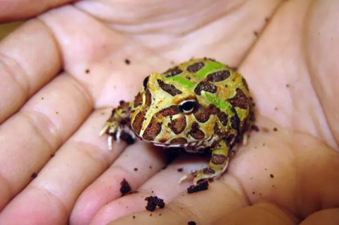

Frogs 🐸
Overview
Frogs are amphibans which means that they need water to survive.
Best Frogs
- Dwarf Frogs
- Pacman Frogs
- 
- Wood frogs
- Spring peeper
- Gray treefrog
Habitats
Frogs live in swamps or forests. They like wet places.
Alimentation
Frogs eat bugs and grab them with their long, sticky tongue.
What they eat
- Flies
- Grasshoppers
- Mosquitoes
Frogs as pets
You can also get frogs as pets. You can find them in pet stores.
Places to get pet frogs:
Lifespan
- Dwarf frogs live for about 5 years
- Pacman frogs can live for about 15 years
- Wood frogs live for about 3 years
- Spring Peepers live for 2 to 3 years
- Gray treefrogs live for 10 to 15 years
Website With Facts On Frogs